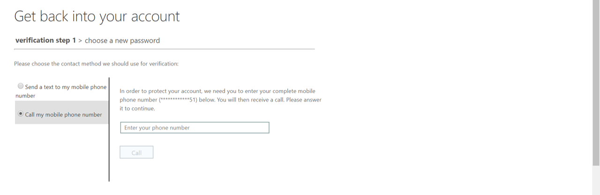
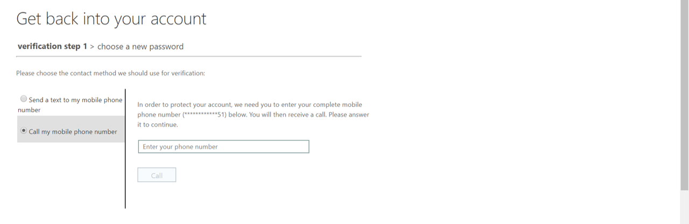
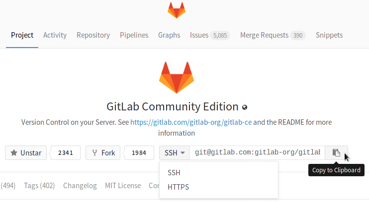
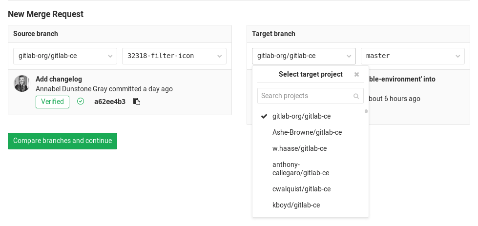

Safe Haven User Documentation¶
Table of contents:
Appendix A: Migrating to a new data science VM post package update
Section 1: Support for bugs and reports¶
You may be surprised that we’re starting this document with a section about bugs and problems! Our logic is that once you’re set up, this is going to be the most important part. Good luck with your analyses, we’re here to help if you need us.
The Turing IT, Research Engineering Group (REG) and the data study group teams attempt to solve IT infrastructure issues arising as soon as possible.
The process for requesting help with the issue is as follows:
Make sure you have read this document and checked if it answers your query.
Please do not log an issue before you have read all of the sections in this document.
Log out and log back in again (to the safe haven or data science environment) at least once, re-attempt the process leading to the bug/error at least twice.
We know that “turn it off and turn it back on again” is a frustrating piece of advice to receive, but in our experience it works rather well! (Particularly when there are lots of folks trying these steps at the same time.)
Let your challenge facilitator know of the issue. They have been given access to an internal Github issue tracker and will relay issues to Turing IT and REG.
Please help your facilitator with a summary, and an appropriate tag for the issue. For example:
[feature request],[package request],[bug report]are all nice and easy to understand.If you are reporting a bug, please include:
Your client machine’s operating system and operating system version.
Precise condition under which the bug occurs. How to reproduce it.
Precise description of the bug. What happens? What would you expect to happen instead if there were no bug?
Any workarounds/fixes you have found
Section 2: Overview of the Turing DSG IT setup¶
To maintain security of the data and challenge insights we are legally required to work on some of the challenges within in the data safe haven hosted by the Turing Institute. Each challenge data set has a data governance and security tier which may impose restrictions on the analysis environment.
This section outlines the different tiers and explains some of the restrictions that apply to the more sensitive data classifications.
Section 2.1: Data governance and challenge overview¶
The challenges in this DSG are all categorised as Tier 2: “Official”.
In order to access tier 2 data, the DSG team will come to each room and take a participant register for each challenge. While you are having an initial problem discussion and brainstorming session, access will be granted to the Turing safe haven and to the relevant challenge data. When this is ready, your facilitator will guide you through user registration and a safe haven usage tutorial following the instructions in this document.
Section 2.2: Turing safe haven set-up¶
The original data is hosted on a server at the Alan Turing Institute. You will not have access to that data server.
A copy of the data is available inside a Windows Azure environment.
The Azure environment also contains a Unix data science VM, which can only be accessed from the dashboard.
→ Your laptop
→ Turing Guest Wi-Fi
→ Windows remote desktop (multi-factor authentication required)
→ Unix Azure environment
The data science VM has a standard suite of data science software, including Python 2/3 via Conda, Spyder, Jupyter and RStudio, with a large selection of pre-installed packages.
You also have access to HackMD for collaborative writing and GitLab for version control and to share your code.
The Tier 2 environment does not allow connection to the internet.
However, there are local copies of the PyPI and CRAN package repositories available inside of the Azure virtual machine.
You can install packages you need from these copies in the usual way, for example pip install --user and packages.install for Python and R respectively.
Note that you will not have access to install packages system-wide and will therefore need to install packages in a user directory. For CRAN, you will be prompted to make a user package direcory when you install your first package. For PyPI, you will need to run pip install with the --user flag.
See Section 4.5: Installing packages for further details.
Section 2.3: Wi-Fi access¶
You need to be connected to the Turing’s internal Wi-fi network to access any of the challenges:
Wi-Fi Name: Turing Guest
Password : Available on signage throughout the Turing Institute
The password is the full string including spaces.
Section 2.4: Multi-factor authentication¶
Multi-factor authentication (MFA, also known as two-factor authentication, “2FA”, even if there are more than two factors) is one of the most powerful ways of protecting your personal information online. In this case, we use MFA to protect the challenge data.
Very briefly, MFA will ask you to confirm your identity via another mechanism whenever you connect to the Windows Azure environment. You can think of your username and password as being the first authentication, and the second being a the phone call or notification via the mobile app. This is why we ask that you bring a mobile device with you to the Data Study Group.
The instructions below recommend using notifications via the Authenticator app, but a phone call will work too.
This process may cause some connectivity challenges on the first (and maybe second) days of the Data Study Group, especially if your phone provider’s network has low connectivity at the British Library. The DSG team are here to help smooth these processes for you, but it is important to emphasise that we are always balancing ease of analysis with our responsibilities as data controllers for the DSG week. Thank you for your patience as we and your facilitators work to get you connected securely.
Section 3: User activation instructions¶
This section describes user activation and verification procedures which are a requirement for the tier 2 or higher Turing safe haven. As a result, you will possess user credentials that allow you to use the safe haven. Instructions should be followed only once, at the start of the data study week. Please let your facilitator know if any of the below fails despite multiple tries.
Section 3.1. Initial User Sign In, configuring MFA¶
You should have provided a phone number when you registered for the DSG. If you did not provide your number, please let you facilitator know, so they can log this with the IT and DSG team and get you an account set up ready to activate.
Your username will be in the format firstname.lastname – you will see this mentioned again later in this document, on its own, or together with the Turing safe haven domain, as firstname.lastname@turingsafehaven.ac.uk.
NOTE: If you have a hyphenated lastname, or surnames, or long family name, your username will (usually!) have been set with lastname as the second part of your surname. Please check in with the DSG team if you are having any issues with your username.
You will have to (1) set a password and (2) configure MFA before you are able to log in to the safe haven.
Set your password¶
For security reasons, you must (re-)set your password before you can log in:
Open a private browser session (‘incognito mode’) on your laptop – this will avoid picking up any existing Azure / Microsoft accounts you have.
Paste the following URL into the private browser address bar - https://aka.ms/ssprsetup
At the login prompt enter your username
username@turingsafehaven.ac.ukand confirm/proceed. (Remember that your username will be in the formatfirstname.lastname.)There will then be a password prompt. The first time you log-in you haven’t set a password yet so click “Forgotten password”

Complete the requested information (captcha and the phone number you provided on registration).
 
Generate a new password using the Secure Password Generator we set up.
NOTE: Do not use special characters or symbols in your password. If you do, you may be unable to type them in the virtual keyboard to access the secure environment. Choose an alphanumeric password with minimum length of 12 characters, with at least one of each:
uppercase character
lowercase character
number

Log into your account
NOTE: During this process, you will need to provide a phone number or an email for account recovery. This is not MFA. You still need to set up MFA in the next section, otherwise you will be unable to launch any apps.

If you get a “account or password is correct” message, there are a few things to check:
that you typed the right username
that you typed the right domain (see below example!)
Also note that if you just reset your password (i.e. not the first time setup, but if you forgot your password during the week and reset it) - it may take 5-10 mins for the user management to sync up with the new password - try again shortly.
Answer your phone when it rings!

Finish logging in

Configure the MFA¶
Before any user can access the secure environment, you need to setup your multifactor authentication. The authentication method can be either via a call to your phone or via the Microsoft Authenticator app.
Step 1: Log into your account
Open a private browser session on your laptop.
Enter https://aka.ms/MFASetup into the address bar.
Login using
firstname.lastname@turingsafehaven.ac.ukand the new password you just created. a. Note that you might find another address is automatically inserted at this step (eg your work email account). (This is why we suggest using a private (incognito) browser session.) If that doesn’t work, log out of your personal account and try again with your data study group username.Set up the second authentication method
Phone option: If you choose to set up the authentication by phone call you will receive a call straight away.
Note that some people get a call that says, “press the pound key” and others receive “press the hash key” – both mean hit the
#button.

Note that when you click
closethe page will switch to your dashboard.You can close your browser at this point.
App option:
i. Download the app via one of these links:
iOS: https://bit.ly/iosauthenticator
Android: https://bit.ly/androidauthenticator
Windows mobile: https://bit.ly/windowsauthenticator
ii. Select the “Receive notifications for verification” radio button
iii. Click on “Set up”
iv. Open your Microsoft Authenticator app on your phone and select “Add an account”
v. Select “Work or School” account
vi. Scan the QR code on the screen
vii. Click “Next” to start verification
viii. Click “Next” again to test the app, you will get a verification on your app.


When confirmed you can close the browser.

Top tips regarding MFA¶
If at first you don’t succeed: do the exact same thing a few more times!
Sometimes the MFA steps can be buggy. We’ve collected a few top tips here, but really, the answer is to be patient and just try again with the exact steps you just completed!
Verifying your account in the Authenticator app can be weirdly buggy. Sometimes it doesn’t work the first time, but for the facilitators we all connected after somewhere between 1 and 10 attempts.
Make sure you allow notifications on your authenticator app.
Check you don’t have Do not Disturb mode on.
You have to be SUPER FAST at acknowledging the notification on your app! The access codes update every 30 seconds. If at first you don’t succeed…
Section 4: Using the safe haven¶
Section 4.1: Access credentials¶
From the user registration process (Section 3), you should have the following ready:
A
usernamein the formatfirstname.lastname.A user
password.
You (re-)set your password in the registration/MFA set-up process (Section 3).
Section 4.2: Logging into the Windows Azure environment¶
In order to access the Azure safe haven environment, follow the below steps:
Open a private web browser session and enter the following URL in an incognito tab/private mode): https://rds.dsgroupX.co.uk/RDWeb/webclient/
Replace
Xby one of the following numbers, depending on challengeX = 10 : Spend Network
X = 11 : NATS
X = 13 : GOSH
X = 14 : Roche
X = 15 : British Antarctic Survey
Important reminder: due to the security tier, there is no internet access from inside any of the above virtual machines. (However, there are local copies of the
PyPIandCRANpackage repositories available inside of the Azure virtual machine. You can install packages you need from these copies in the usual way, for examplepip installandpackages.installfor Python and R respectively. Note that you will need to use the--userflag withpip install. See Section 4.5: Installing packages for further details.Additionally there is no copy/paste functionality from outside to inside the environment.
NOTE: Don’t forget the
https://- it won’t work without that prefix.Enter the username you’ve been provided, ensure that you use the following format:
firstname.lastname@turingsafehaven.ac.uk
NOTE: that’s an
ac.ukaddress not.co.ukEnter your password and confirm.
You will now receive a call or mobile app notification for the MFA to confirm. For the call, you may have to move to a place with good reception and/or press the hash (#) key multiple times in-call.
After success, you’ll see the following screen:
(First time only) Follow the steps in Section 4.3 if this is the first time you are logging in.
Following first time use, you can select whatever app that you wish to work with – each is explained in the following sections.
NOTE: Remember that once you go into one of these apps, you’re now going to a local server / UK Remote Desktop / VM. That means some of your key mappings may not be the same as you’re used to.
We recommend opening a text editor to check what keys the remote desktop thinks you’re typing – especially if you have special characters you are using. You can right click on
DesktopandApplications->Settings->Keyboardto change the layout.
Section 4.3: First-time set-up¶
In order to set up your user account on the virtual machine, you need to follow the below steps once.
Run the “Shared VM (SSH)” app. You will need to first authenticate using MFA.

If you don’t respond fast enough to the MFA, or it has failed, you will likely get an error that looks like this:
When you get in the first time, there will be a security alert. Dismiss security alert (that looks like the screenshot below) by clicking
"yes"(this only happens on the first log in).
Log into Putty with your
username(firstname.lastname) andpassword.Note that the cursor will not move while you are typing your password!
Once you have confirmed log in, you can close this window.
NOTE: Be careful not to close the browser when you close the tab in the remote desktop!
Run the “Shared VM (Desktop)” app. Verify using MFA, then login with:
firstname.lastname@turingsafehaven.ac.ukandpassword.Check the box in the security alert below and confirm by clicking the
"Yes"button.
Insert your credentials as per the example below:

If you get a warning:
Oops, we couldn’t connect to “Shared VM (Desktop)”
We couldn’t connect to the gateway because of an error.
Then make sure that you have MFA enabled (see Section 3, which is different from text messages for account recovery. If this keeps happening, ask your admin or tech support for help.
If you get an error:
connecting to sesman ip 127.0.0.1 port 3350
sesman connect ok
sending login info to session manager, please wait…
login failed for display 0
Then it is likely that you have entered your credentials incorrectly. Please try again, entering your username and password carefully. If this keeps happening, ask your admin or tech support for help.
Section 4.4: Using the data analytics virtual machine¶
The analytics environment can be accessed through the Shared VM (desktop) app.
Please log in with username firstname.lastname and password password.

When you get to this screen, it is important that you select the “Use default config” option.
Applications can be accessed through Terminal or right click on desktop (top left) and:
Applications->Development->RStudioApplications->Development->AtomOpen Terminal here ->
jupyter notebook &if you want to use python within a jupyter notebook.Open Terminal here ->
spyder &if you want to use python within the Spyder IDE (integrated development environment) which is quite similar to RStudio.
Note that typing R at the commandline will run conda’s version R.
You can run the system R by typing /user/bin/R.
We had already pointed RStudio to use system R, so those using RStudio should see the custom packages with no issues.
Accessing GitLab and HackMD from the VM instead of via work resources app¶
This VM can also be used to directly access GitLab and HackMD, via the broswer within the VM.
Point firefox to the url provided by the resource dashboard for GitLab/HackMD
Read and write access – the repository URL can be copied using via the clipboard icon highlighted in the screenshot below.
If you create a new repository, we recommend you make it public. As each challenge has it’s own secure environment, this will make the repository accessible to your colleagues working on the same challenge but not to anyone else (who will not have access to the challenge environment).
Section 4.5: Installing packages¶
Packages can be installed from a local mirror (inside the environment) of CRAN and PyPI, for challenges in Tier 2 environment or below.
You can install packages you need from these copies in the usual way, for example pip install and packages.install for Python and R respectively.
Note that you will not have access to install packages system-wide and will therefore need to install packages in a user directory. For CRAN, you will be prompted to make a user package direcory when you install your first package. For PyPI, you will need to run pip install with the --user flag.
In Python, run this in a shell:
pip install --user <package-name>
In R, you can install them from inside R:
> install.packages("cluster")
You will see:
Installing package into ‘/usr/local/lib/R/site-library’
(as ‘lib’ is unspecified)
Warning in install.packages("cluster") :
'lib = "/usr/local/lib/R/site-library"' is not writable
Would you like to use a personal library instead? (yes/No/cancel)
Enter yes, which prompts you to confirm the name of the library:
Would you like to create a personal library
‘~/R/x86_64-pc-linux-gnu-library/3.5’
to install packages into? (yes/No/cancel)
Enter yes, which then installs the packages:
trying URL 'http://10.1.0.21/src/contrib/cluster_2.0.7-1.tar.gz'
...
Requests for additional packages may be submitted via the facilitator for Tier 3 environments and above, or if a requested package is not available from the package mirrors in a Tier 2 or below environment.
In the latter case, please first try to find an alternative in PyPI or CRAN which can be used to the same/similar effect.
If a package request is not critical to the success of the project, the Research Computing teams reserve the right to decline the request; the time needed to successfully process the request and test will be taken into consideration.
For each iteration of package updates, a new data science VM will be deployed into the Azure environment and you will need to access via the Custom VM app - please also see Appendix A: Migrating to a new data science VM post package update
Section 4.6: Accessing GitLab and storing code¶
GitLab is an open source version of GitHub, working as a code hosting platform for version control and collaboration. It lets you and others work together on projects.
It also allows you to version control all the code that you write for any of the Data Study Group challenges. There is a local GitLab installation within the Work Resources.
If you have not used GitLab before:
There is a small tutorial available as an Appendix to this guidance
You can find the official documentation in the GitLab website
Ask your group colleagues for help
Ask in the Slack channel for help.
Everything that is not stored in a GitLab repository or on the shared R: drive by Friday lunchtime will be DESTROYED FOR EVER.
Make sure that every piece of code you think might be at all useful is stored in a GitLab repository within the secure environment. Small processed data can also be stored in Gitlab. Larger processed datasets should be transferred to the shared R: drive using the File Transfer WinSCP app.
You can access the same GitLab repositories from the Work Resources page or via the shared VM desktop.
Login with username firstname.lastname@turingsafehaven.ac.uk and password.
Please make all your repositories public so they are easy to share within your group. (Note that they are not really public as the server is only available inside your team’s virtual environment.)
Section 4.7: Accessing HackMD and writing the report¶
HackMD is a locally installed tool that allows you to collaboratively write the data study group challenge report. It uses markdown which is a simple way to format your text so that it renders nicely in full html.
You can find a really great markdown cheat sheet at https://github.com/adam-p/markdown-here/wiki/Markdown-Cheatsheet
You can access a local installation of HackMD from the Work Resources page.
Login with your username firtname.lastname@turingsafehaven.ac.uk and password, as below.

We have provided some example report templates for you which outline a structure we recommend.
Please make all your documents public so they are easy to share within your group.
(Note that they are not really public as the server is only available inside your team’s virtual environment.)
We recommend that one person start the document, then let everyone know the URL text after the /.
TOP TIP: The URL for sharing a report is rather long. You can either write it in a textfile in the
Rdrive (which everyone has access to) or publish the link and share that one (the published link will be much shorter). Anyone who has it can now click the little blue pen to go back to the editable version.
TOP TIP: a lower case
Land an upper caseIwill look the same! (I /= l) Try the one you didn’t try first time round if you don’t get to the right place.

Section 4.8: Accessing the data and exporting figures¶
The data can be found in the R drive on the Windows Azure environment.
Everyone in your group will be able to access it, so please make a copy of it to your own desktop or working directory.
You can use Windows File Explorer to move data within the Windows environment.
You can transfer the data to the Linux environment using the File Transfer WinSCP app. (See Appendix A)
To access the data science VM’s file system, enter username username and password into the login mask, as shown below, and confirm with “login”.

TOP TIP: Although the default says not to save the password – you’re in a super secure environment so your life will be easier if you do save it.
You can now drag and drop any files between the data science VM and the Windows Azure environment, as in the screenshot below.
Section 4.9: Creating and presenting the report-out slides for Friday¶
To create the presentation slides, go to the Presentation server on the Work Resources list and then open the Open Office icon on the Windows desktop.
An example template is provided for you in the windows Azure environment (shared drive).
You won’t be able to access the compute virtual machines from the windows desktop. That means all figures etc needed for the presentation must be moved off the compute VM(s) onto the network fileshares. As a nice side effect of this move to the network file shares, you’ll also be moving the outputs you want to save to persistent storage! Once the compute virtual machines are gone - on Friday afternoon - they will be gone forever. Please do this early and often through the week (not just for the presentation.)
The presentations on Friday will be given from inside the secure environment. This means you don’t have to be too careful about protecting any sensitive analyses or results you have created. It also means you can show live demos if needed.
It’s important to note that the presentation will probably be slightly laggy (there will be a lot of people using the wifi in the Enigma room during your presentation). It probably won’t be a problem for your slides, but if you show movies or demo code there’s a risk - as always - that they won’t play as well as you’d hoped. Be prepared for this outcome and be able to talk about what the audience would see. You do not have time to try to fix the demo during your presentation. And that’s ok! You can always show the demo to the challenge owners in a quiet space after lunchtime.
Section 4.10: Outputs from the week¶
We will close down the compute virtual machines on the Friday afternoon.
That means that anything that is a valuable output of the week should be stored in the persistent storage area - shared drive - OR in the GitLab repository, rather than your local user storage.
Make sure that every piece of code, image, or processed dataset you think might be at all useful is stored in a GitLab repository (code) or on the shared drive (data, images) before lunchtime on Friday. Please see Appendix A: Migrating to a new data science VM post package update for details on how to use WinSCP to transfer files from the VM to the shared drive within the secure environment.
Please do this early and often through the week (not just for the presentation.)
Everything that is not stored in a GitLab repository or the shared drive on Friday lunchtime will be DESTROYED FOR EVER.
Suggested folders for the shared drive:
Presentation
Transformed data/derived data
Report
Code
Images
Acknowledgments¶
Based on an initial document written March/April 2018 by Kirstie Whitaker.
Updated in December 2018 by Catherine Lawrence, Franz Király, Martin O’Reilly, and Sebastian Vollmer.
Updated again in March/April 2019 by Miguel Morin, Catherine Lawrence, Alvaro Cabrejas Egea, Kirstie Whitaker, James Robinson and Martin O’Reilly.
Appendix A: Migrating to a new data science VM post package update¶
Important: please listen to your facilitators who will explicitly update you on VM updates and potential additional instructions specific to the migration.
Do not attempt to migrate to a new data science VM before it has been officially authorized or recommended by your facilitator, as it might result in loss of work or data.
For each iteration of package updates, a new data science VM will be deployed into the Azure environment.
User access credentials username and password remain the same; the IP address [IP] changes in a systematic way.
Each package update increments the last IP block 160 by one.
That is, the first VM’s address is 10.250.sth.160, the address of the first update is 10.250.sth.161, of the second update 10.250.sth.162, and so on.
Apart from the change in IP address, the VM itself will behave the same.
Local availability of a data copy file volume, usage of Gitlab, HackMD, etc will be unaffected by the VM update.
To access an updated VM, use the custom VM (desktop) app instead of the shared VM (desktop) app.
This is exactly as in Section 4.4, with the only difference that in each log-in, you have to provide the updated VM’s [IP].
Prior to initial use, you will also have to follow the first-time set-up instructions by SSH-ing in via the custom VM (SSH) app instead of the shared VM (SH) app, following instructions as in Section 4.3, with the only difference that in each log-in, you have to provide the updated VM’s [IP].
Any local files that you have created in older VMs – e.g., analysis scripts, notes, derived data – will have to be manually transferred and are not automatically available in a newer VM.
Three options to transfer files:
Use WinSCP for drag-and-drop file transfer, as in Section 4.8. First transfer from the old [IP] to the Windows environment, then transfer from Windows environment to new [IP].
Use command line SCP for direct transfer from old [IP] to new [IP]. The data science VMs are able to see each other in the network.
Push your partial work to Gitlab from a local git repository on the old VM, and the pull your work into a local git repository on the new VM. This is not recommended for figures or files above a size of 1MB as it will clutter Gitlab, please use only for code and other text files, or small figures/data.
Appendix B: Gitlab tutorial notes¶
Gitlab can be thought of as a local version of github from different company - that is a git server along with useful features such as
Project wiki - exactly what it says
Project pastebin - share bits of code
Project issue tracker - track things TODO and bugs
Pull requests - Way to keep track of changes individuals have made to be included in master
Some teams design their entire workflows around these things. A comparison in terms of features can be found here.
Repositories¶
A repository is usually used to organize a single project. Repositories can contain folders and files, images, videos, spreadsheets, and data sets – anything your project needs. We recommend including a README, or a file with information about your project.
During the Data Study Group Week, you will be accessing and adding files to the same project repository.
Add your Git username and set your email¶
It is important to configure your Git username and email address, since every Git commit will use this information to identify you as the author.
On your shell, type the following command to add your username:
git config --global user.name "YOUR_USERNAME"
Then verify that you have the correct username:
git config --global user.name
To set your email address, type the following command:
git config --global user.email "your_email_address@example.com"
To verify that you entered your email correctly, type:
git config --global user.email
You’ll need to do this only once, since you are using the --global option. It tells Git to always use this information for anything you do on that system. If you want to override this with a different username or email address for specific projects, you can run the command without the --global option when you’re in that project.
Cloning projects¶
In Git, when you copy a project you say you “clone” it. To work on a git project locally (from your own computer), you will need to clone it. To do this, sign in to GitLab.
When you are on your Dashboard, click on the project that you’d like to clone. To work in the project, you can copy a link to the Git repository through a SSH or a HTTPS protocol. SSH is easier to use after it’s been set up, you can find the details here. While you are at the Project tab, select HTTPS or SSH from the dropdown menu and copy the link using the Copy URL to clipboard button (you’ll have to paste it on your shell in the next step).

Go to your computer’s shell and type the following command with your SSH or HTTPS URL:
git clone PASTE HTTPS OR SSH HERE
Command Line Basics¶
There are multiple git cheat sheets such as interactive and this one. We summarised what we find useful below.
Below you can find other commands you may find useful during the week.
Go into a project directory to work in it
cd NAME-OF-PROJECT
Go back one directory
cd ..
List what’s in the current directory
ls
Create a new directory
mkdir NAME-OF-YOUR-DIRECTORY
Remove a file
rm NAME-OF-FILE
Remove a directory and all of its contents
rm -r NAME-OF-DIRECTORY
View command history
history
Show which directory I am in
pwd
Clear the shell window
clear
Branches¶
Branching is the way to work on different versions of a repository at one time.
By default your repository has one branch named master which is considered to be the definitive branch. We use branches to experiment and make edits before committing them to master.
When you create a branch off the master branch, you’re making a copy, or snapshot, of master as it was at that point in time. If someone else made changes to the master branch while you were working on your branch, you could pull in those updates.
To create a branch:
git checkout -b NAME-OF-BRANCH
Work on an existing branch:
git checkout NAME-OF-BRANCH
To merge created branch with master branch you need to be in the created branch.
git checkout NAME-OF-BRANCH
git merge master
To merge master branch with created branch you need to be in the master branch.
git checkout master
git merge NAME-OF-BRANCH
Downloading the latest changes in a project¶
This is for you to work on an up-to-date copy (it is important to do this every time you start working on a project), while you set up tracking branches. You pull from remote repositories to get all the changes made by users since the last time you cloned or pulled the project. Later, you can push your local commits to the remote repositories.
git pull REMOTE NAME-OF-BRANCH
When you first clone a repository, REMOTE is typically “origin”. This is where the repository came from, and it indicates the SSH or HTTPS URL of the repository on the remote server. NAME-OF-BRANCH is usually “master”, but it may be any existing branch.
Add and commit local changes¶
You’ll see your local changes in red when you type git status. These changes may be new, modified, or deleted files/folders. Use git add to stage a local file/folder for committing. Then use git commit to commit the staged files:
git add FILE OR FOLDER
git commit -m "COMMENT TO DESCRIBE THE INTENTION OF THE COMMIT"
To add and commit all local changes in one command:
git add .
git commit -m "COMMENT TO DESCRIBE THE INTENTION OF THE COMMIT"
To push all local commits to the remote repository:
git push REMOTE NAME-OF-BRANCH
For example, to push your local commits to the master branch of the origin remote:
git push origin master
To delete all local changes in the repository that have not been added to the staging area, and leave unstaged files/folders, type:
git checkout .
Note: The . character typically means all in Git.
How to create a Merge Request¶
Merge requests are useful to integrate separate changes that you’ve made to a project, on different branches. This is a brief guide on how to create a merge request. For more information, check the merge requests documentation.
Before you start, you should have already created a branch and pushed your changes to GitLab.
Go to the project where you’d like to merge your changes and click on the Merge requests tab.
Click on New merge request on the right side of the screen.
From there on, you have the option to select the source branch and the target branch you’d like to compare to. The default target project is the upstream repository, but you can choose to compare across any of its forks.

When ready, click on the Compare branches and continue button.
At a minimum, add a title and a description to your merge request. Optionally, select a user to review your merge request and to accept or close it. You may also select a milestone and labels.
When ready, click on the Submit merge request button. Your merge request will be ready to be approved and merged.
Appendix C: Troubleshooting¶
Unexpected certificate error¶
Symptom¶
You can successfully log into the RDS webclient at
https://rds.dsgroupX.co.uk/RDWeb/weblientWhen you try and launch an app, you receive an error saying “Your session ended because an unexpected server authentication certificate was received from the remote PC.”
When you click on the padlock icon in the address bar and view the SSL certificate, the “SHA-1 Fingerprint” in the certificate matches the “SHA-1 Thumbprint” in the error message.

Cause¶
The SSL certificate protecting your connection to the RDS webclient expires every three months and is renewed every two months.
The new SSL certificate is seamlessly picked up by your browser when connecting to https://rds.dsgroupX.co.uk/RDWeb/weblient.
However, the webclient downloads a separate copy of the certificate for its own use to validate connections to the apps it serves.
This downloaded certificate is cached by your browser, which means that the old certificate will continue to be used by the web app when the browser is allowed to load things from its cache.
Solution¶
Get your browser to do a hard reload of the page at https://rds.dsgroupX.co.uk/RDWeb/weblient (instructions vary by browser and operating system).
This hard reload will reload items in the cache and so retrieve a copy of the new certificate.